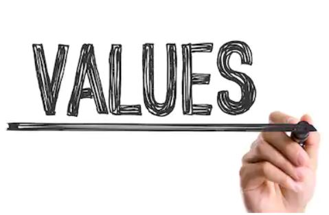

☰

This is my system:
“Life is like riding a bicycle. To keep your balance, you must keep moving.”– Albert Einstein
Practice makes perfect
Mistakes are OK
Don't Take Yourself Too Seriously
Learn Every Day
Believe in Change
Invest in Ideas That Matter